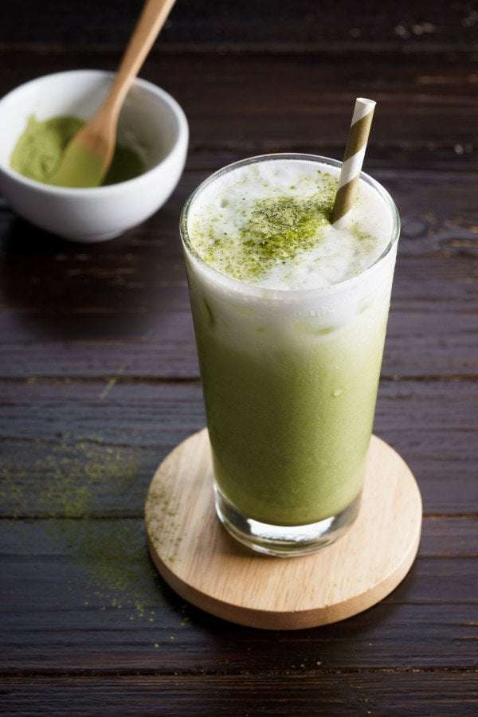
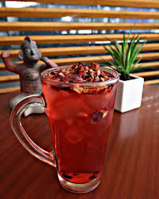
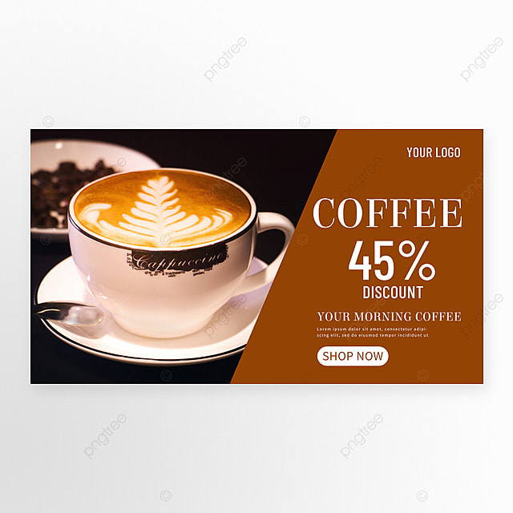

| En este video se muestra el proceso de la preparacion para un latte tal cual como lo hacemos aqui en nuestro de negocio de cafes en Cafeteria la mejor |
|
| En esta pagina web ofrecemos bebidas con mucha variedad de sabores frios.Algunos de estos son el Frappuchino, Matcha, Tisana y Frappe de Caramelo etc... | |
 |  | |
|  |